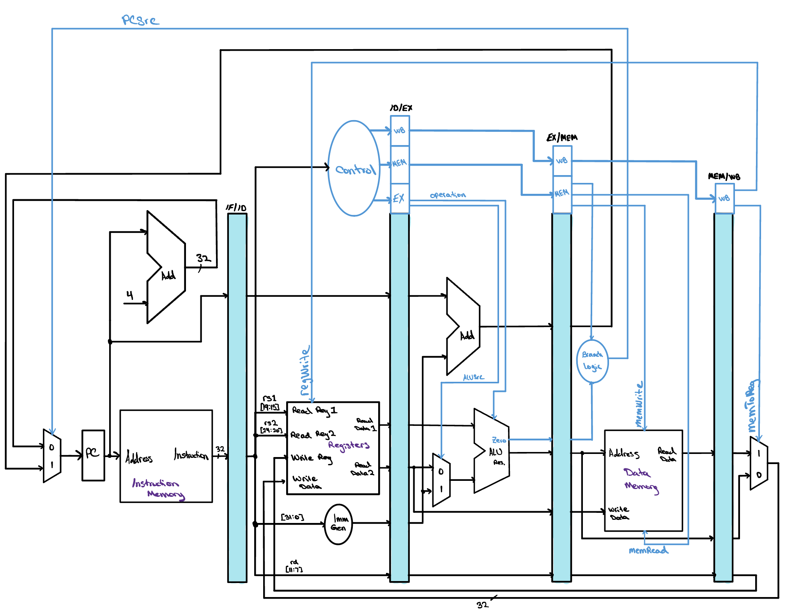
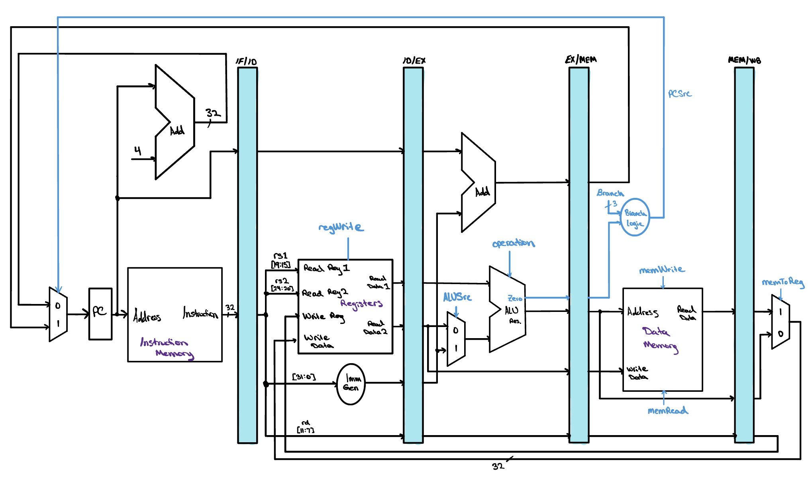
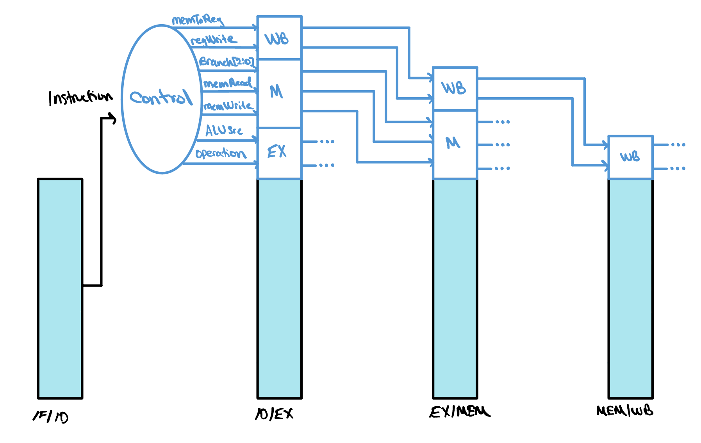

The Pipelined Control
The pipelined control is very nearly the control unit we already built for the single cycle CPU. The same signals come out of the same decoder and they still mean exactly what they meant before. What changes is when each one is needed, because an instruction now spends five cycles crossing the datapath instead of one, and every control value has to arrive at the stage that uses it.

The Same Control, Almost
There is good news at the start of this lesson. The control for our
pipelined CPU is more or less the control unit we built for the
single cycle machine, and almost nothing about it has to be
reconsidered. The same decoder reads the same instruction fields and
produces the same signals, and each signal still steers the same
piece of hardware it steered before. A
regWrite of one still means this
instruction writes a register, and an
ALUSrc of one still means the ALU takes
its second operand from the immediate rather than from a register.
Pipelining did not change what an instruction wants the datapath to
do. It only changed how many cycles the datapath takes to do it.

We have made exactly one change to the control itself, and it is a
subtraction rather than an addition. The
ALU control unit is gone. In the single cycle CPU
the main control produced a two bit
ALUOp that named a broad category of
work, and a second small module then combined that category with the
instruction's funct3 and funct7 fields to produce the four bit code
the ALU actually reads. Here the main control skips the middle step
and emits that four bit
operation signal directly, so the ALU
is told precisely what to do by the same decoder that decides
everything else.
Taking that module away buys us something worth naming. The ALU control unit was a second decoder sitting directly in front of the ALU, which meant that in any cycle where the ALU had work to do, the instruction had to pass through two levels of decoding logic in series before a single bit of arithmetic could begin. In a pipeline that is precisely the wrong place for it. Decoding is what the Decode stage is for, and a value decoded there rides forward to Execution in a pipeline register and arrives ready to use. Folding the ALU decode into the main control moves that work into a stage that has time for it and leaves the execution stage with nothing to do but compute, which shortens the longest path through that stage and therefore lets the whole pipeline run at a higher clock rate. It also leaves us one module to write and test instead of two, and one fewer place for two decoders to disagree about what an instruction meant.
Go back Forgot how the control unit works? See how the main control decodes an instruction into the signals that steer the datapath.One more thing carries over unchanged. As with the single cycle CPU, we assume the PC is written with the address of the next instruction on every clock cycle, so there is no write signal to decide and nothing for the control to say about it. The same argument covers the four pipeline registers. Every one of them is written at the end of every cycle, because there is always an instruction moving from each stage into the next, so none of them needs a write enable either. For now the pipeline simply advances, and the control never has to stop it.
Five Groups of Control
An instruction now takes five cycles to cross the datapath, but no single piece of hardware is busy for all five of them. The register file's write port matters only in Write-back. The data memory matters only in Memory. The ALU matters only in Execution. Since every control line drives exactly one component, and that component does its work in exactly one stage, a control value only has to be correct during the stage that consumes it. What it holds in the other four cycles simply does not matter, because nothing is listening.

That observation is what makes pipelined control manageable, and it lets us divide the control lines into five groups, one for each stage. Two of those groups turn out to be empty. Instruction Fetch reads the instruction memory and writes the PC on every single cycle no matter what is being fetched, so there is nothing to decide. Instruction Decode reads both register file ports and runs the immediate generator for every instruction as well, and any values it produces that turn out to be irrelevant are simply ignored later. So although there are five groups, only three of them carry anything: the signals used in Execution, the signals used in Memory, and the signals used in Write-back.
The diagram here shows what that grouping looks like as hardware.
The instruction sitting in the IF/ID register is handed to the
control unit at the start of Decode, and every control
signal for the whole of that instruction's life is worked out right
there, once. They leave the control block sorted into three bundles.
The EX field holds
ALUSrc and
operation. The M field
holds Branch,
memRead and
memWrite. The WB field
holds memToReg and
regWrite. All three are written into
ID/EX at the end of the cycle, alongside the register values and the
immediate the stage has just produced.
Follow the fields across the diagram and you will see them get smaller. The Execution stage reads the EX field, uses it to drive the operand multiplexer and the ALU, and then has no further use for it, so EX/MEM carries only M and WB forward. The Memory stage reads the M field, drives the data memory and the branch decision with it, and drops it in turn, so MEM/WB carries only WB. The Write-back stage reads the last two bits and nothing at all is left over. Each pipeline register holds exactly the control an instruction still has ahead of it and not one bit more.
This is the same rule we met when the destination register number was missing, and it costs us the same thing. Anything an instruction will need in a later stage has to travel with it, so the pipeline registers have to grow wider to make room for these control bits on top of the data they were already carrying. ID/EX gains all three fields, EX/MEM gains two, and MEM/WB gains one. Nothing new computes anything and no stage does more work than it did before. We are paying for pipelined control in register width, which is a cheap thing to spend, and the reward is that every stage is told what to do by an instruction that decided it four cycles ago and has been carrying the answer ever since.
Check Yourself
The control unit reads the instruction held in IF/ID and nothing feeds it again after that. How does an instruction reaching the Memory stage get the control values it needs, three cycles after the control unit last saw it?